Q1 Youth Risk Behavior Surveillance
Every two years, the Centers for Disease Control and Prevention conduct the Youth Risk Behavior Surveillance System (YRBSS) survey, where it takes data from high schoolers (9th through 12th grade), to analyze health patterns. You will work with a selected group of variables from a random sample of observations during one of the years the YRBSS was conducted.
Load the data
This data is part of the openintro textbook and we can load and inspect it. There are observations on 13 different variables, some categorical and some numerical. The meaning of each variable can be found by bringing up the help file:
?yrbss
data(yrbss)
glimpse(yrbss)
## Rows: 13,583
## Columns: 13
## $ age <int> 14, 14, 15, 15, 15, 15, 15, 14, 15, 15, 15...
## $ gender <chr> "female", "female", "female", "female", "f...
## $ grade <chr> "9", "9", "9", "9", "9", "9", "9", "9", "9...
## $ hispanic <chr> "not", "not", "hispanic", "not", "not", "n...
## $ race <chr> "Black or African American", "Black or Afr...
## $ height <dbl> NA, NA, 1.73, 1.60, 1.50, 1.57, 1.65, 1.88...
## $ weight <dbl> NA, NA, 84.4, 55.8, 46.7, 67.1, 131.5, 71....
## $ helmet_12m <chr> "never", "never", "never", "never", "did n...
## $ text_while_driving_30d <chr> "0", NA, "30", "0", "did not drive", "did ...
## $ physically_active_7d <int> 4, 2, 7, 0, 2, 1, 4, 4, 5, 0, 0, 0, 4, 7, ...
## $ hours_tv_per_school_day <chr> "5+", "5+", "5+", "2", "3", "5+", "5+", "5...
## $ strength_training_7d <int> 0, 0, 0, 0, 1, 0, 2, 0, 3, 0, 3, 0, 0, 7, ...
## $ school_night_hours_sleep <chr> "8", "6", "<5", "6", "9", "8", "9", "6", "...
skimr::skim(yrbss)
Table 1: Data summary
|
|
|
|
Name
|
yrbss
|
|
Number of rows
|
13583
|
|
Number of columns
|
13
|
|
_______________________
|
|
|
Column type frequency:
|
|
|
character
|
8
|
|
numeric
|
5
|
|
________________________
|
|
|
Group variables
|
None
|
Variable type: character
|
skim_variable
|
n_missing
|
complete_rate
|
min
|
max
|
empty
|
n_unique
|
whitespace
|
|
gender
|
12
|
1.00
|
4
|
6
|
0
|
2
|
0
|
|
grade
|
79
|
0.99
|
1
|
5
|
0
|
5
|
0
|
|
hispanic
|
231
|
0.98
|
3
|
8
|
0
|
2
|
0
|
|
race
|
2805
|
0.79
|
5
|
41
|
0
|
5
|
0
|
|
helmet_12m
|
311
|
0.98
|
5
|
12
|
0
|
6
|
0
|
|
text_while_driving_30d
|
918
|
0.93
|
1
|
13
|
0
|
8
|
0
|
|
hours_tv_per_school_day
|
338
|
0.98
|
1
|
12
|
0
|
7
|
0
|
|
school_night_hours_sleep
|
1248
|
0.91
|
1
|
3
|
0
|
7
|
0
|
Variable type: numeric
|
skim_variable
|
n_missing
|
complete_rate
|
mean
|
sd
|
p0
|
p25
|
p50
|
p75
|
p100
|
hist
|
|
age
|
77
|
0.99
|
16.16
|
1.26
|
12.00
|
15.0
|
16.00
|
17.00
|
18.00
|
<U+2581><U+2582><U+2585><U+2585><U+2587>
|
|
height
|
1004
|
0.93
|
1.69
|
0.10
|
1.27
|
1.6
|
1.68
|
1.78
|
2.11
|
<U+2581><U+2585><U+2587><U+2583><U+2581>
|
|
weight
|
1004
|
0.93
|
67.91
|
16.90
|
29.94
|
56.2
|
64.41
|
76.20
|
180.99
|
<U+2586><U+2587><U+2582><U+2581><U+2581>
|
|
physically_active_7d
|
273
|
0.98
|
3.90
|
2.56
|
0.00
|
2.0
|
4.00
|
7.00
|
7.00
|
<U+2586><U+2582><U+2585><U+2583><U+2587>
|
|
strength_training_7d
|
1176
|
0.91
|
2.95
|
2.58
|
0.00
|
0.0
|
3.00
|
5.00
|
7.00
|
<U+2587><U+2582><U+2585><U+2582><U+2585>
|
Before you carry on with your analysis, it’s is always a good idea to check with skimr::skim() to get a feel for missing values, summary statistics of numerical variables, and a very rough histogram.
Exploratory Data Analysis
You will first start with analyzing the weight of participants in kilograms. Using visualization and summary statistics, describe the distribution of weights. How many observations are we missing weights from?
sum(is.na(yrbss$weight))
## [1] 1004
data_tidy <- yrbss %>%
filter(weight != "NA")
ggplot(data_tidy, mapping = aes(x=weight)) +
geom_density()+
theme_minimal()+
labs(title = "Distribution of Weights", subtitle = "Right-skewed distribution with high outliers", x = "Weight (in Kg)", y = "Density")+
theme(plot.title = element_text(family = "Times", face = "bold", size = (20)),
axis.title = element_text(family = "Times", size = (12)),
axis.text = element_text(family = "Times", size = (12)))
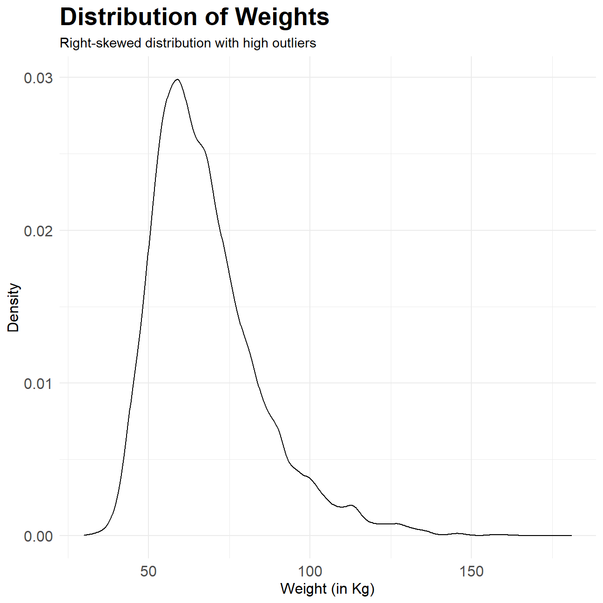
summary(data_tidy$weight)
## Min. 1st Qu. Median Mean 3rd Qu. Max.
## 29.9 56.2 64.4 67.9 76.2 181.0
Next, consider the possible relationship between a high schooler’s weight and their physical activity. Plotting the data is a useful first step because it helps us quickly visualize trends, identify strong associations, and develop research questions.
ggplot(data_tidy, mapping = aes(x = weight, y = physically_active_7d))+
geom_point()+
theme_minimal()+
labs(title = "Relationship between weight and physical activity", subtitle = "...", x = "Weight (in Kg)", y = "Days of physical activity per week")+
theme(plot.title = element_text(family = "Helvetica", face = "bold", size = (20)),
axis.title = element_text(family = "Helvetica", size = (12)),
axis.text = element_text(family = "Helvetica", size = (12)))
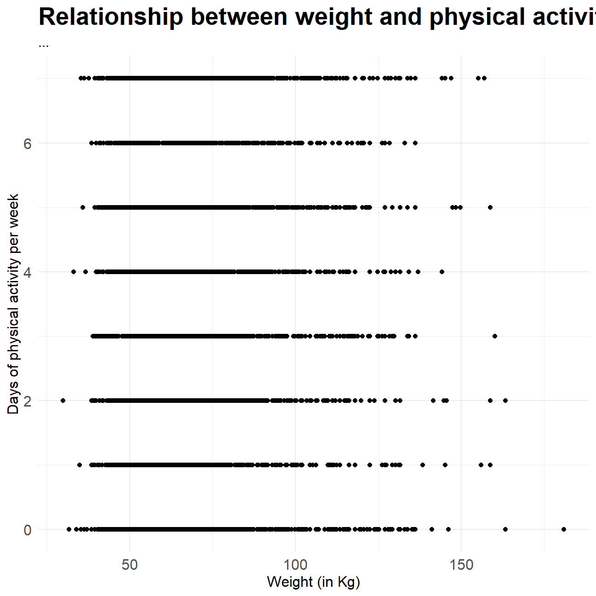
Let’s create a new variable physical_3plus, which will be yes if they are physically active for at least 3 days a week, and no otherwise.
yrbss <- yrbss %>%
mutate(physical_3plus = ifelse(physically_active_7d >= 3, "yes", "no"))
yrbss %>%
filter(!is.na(physical_3plus)) %>%
group_by(physical_3plus) %>%
summarise(count = n()) %>%
mutate(prop= count/sum(count))
## # A tibble: 2 x 3
## physical_3plus count prop
## <chr> <int> <dbl>
## 1 no 4404 0.331
## 2 yes 8906 0.669
Can you provide a 95% confidence interval for the population proportion of high schools that are NOT active 3 or more days per week?
Make a boxplot of physical_3plus vs. weight. Is there a relationship between these two variables? What did you expect and why?
yrbss_boxplot <- yrbss %>%
filter(!is.na(physical_3plus), !is.na(weight)) %>%
ggplot(aes(x=physical_3plus, y=weight)) +
geom_boxplot() +
theme_minimal() +
theme(plot.title = element_text(face="bold")) +
labs(title = "Relationship between physical activity and weight", subtitle = "People with higher level of physical activity are slightly heavier", y = "Weight (in Kg)", x = "Level of physical activity") +
theme(plot.title = element_text(family = "Helvetica", face = "bold", size = (20)),
axis.title = element_text(family = "Helvetica", size = (12)),
axis.text = element_text(family = "Helvetica", size = (12))) +
NULL
yrbss_boxplot
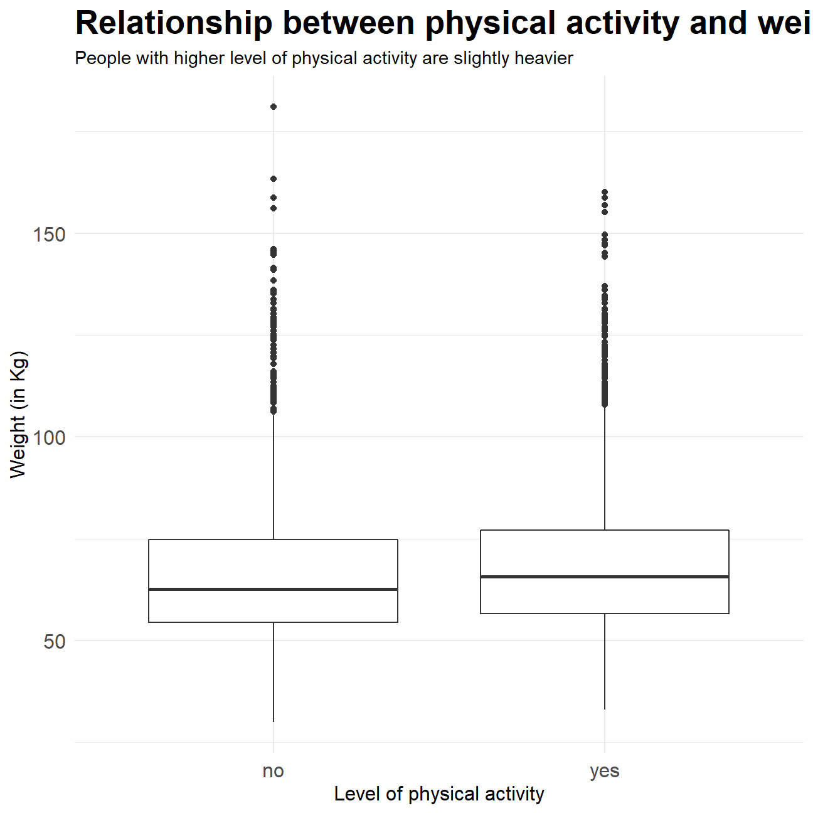
> We expect that people with higher level of physical activity weigh less than people who are more inactive. However, surprisingly, people who exercise more are heavier. This may be explained by the fact that muscles weigh more. Besides, from the outliers, we can see that people with an extremely heavy weight are those who exercise less than 3 days per week.
Confidence Interval
Boxplots show how the medians of the two distributions compare, but we can also compare the means of the distributions using either a confidence interval or a hypothesis test. Note that when we calculate the mean/SD, etc weight in these groups using the mean function, we must ignore any missing values by setting the na.rm = TRUE.
yrbss %>%
group_by(physical_3plus) %>%
filter(!is.na(physical_3plus)) %>%
summarise(mean_weight = mean(weight, na.rm = TRUE),
sd_weight = sd(weight, na.rm=TRUE),
count = n(),
se_weight = sd_weight/sqrt(count),
t_critical = qt(0.975, count-1),
margin_of_error = t_critical * se_weight,
lower = mean_weight - t_critical * se_weight,
upper = mean_weight + t_critical * se_weight
)
## # A tibble: 2 x 9
## physical_3plus mean_weight sd_weight count se_weight t_critical
## <chr> <dbl> <dbl> <int> <dbl> <dbl>
## 1 no 66.7 17.6 4404 0.266 1.96
## 2 yes 68.4 16.5 8906 0.175 1.96
## # ... with 3 more variables: margin_of_error <dbl>, lower <dbl>, upper <dbl>
There is an observed difference of about 1.77kg (68.44 - 66.67), and we notice that the two confidence intervals do not overlap. It seems that the difference is at least 95% statistically significant. Let us also conduct a hypothesis test.
Hypothesis test with infer
Next, we will introduce a new function, hypothesize, that falls into the infer workflow. You will use this method for conducting hypothesis tests.
But first, we need to initialize the test, which we will save as obs_diff.
obs_diff <- yrbss %>%
specify(weight ~ physical_3plus) %>%
calculate(stat = "diff in means", order = c("yes", "no"))
Notice how you can use the functions specify and calculate again like you did for calculating confidence intervals. Here, though, the statistic you are searching for is the difference in means, with the order being yes - no != 0.
After you have initialized the test, you need to simulate the test on the null distribution, which we will save as null.
null_dist <- yrbss %>%
specify(weight ~ physical_3plus) %>%
hypothesize(null = "independence") %>%
generate(reps = 1000, type = "permute") %>%
calculate(stat = "diff in means", order = c("yes", "no"))
Here, hypothesize is used to set the null hypothesis as a test for independence, i.e., that there is no difference between the two population means. In one sample cases, the null argument can be set to point to test a hypothesis relative to a point estimate.
Also, note that the type argument within generate is set to permute, which is the argument when generating a null distribution for a hypothesis test.
We can visualize this null distribution with the following code:
ggplot(data = null_dist, aes(x = stat)) +
geom_histogram()
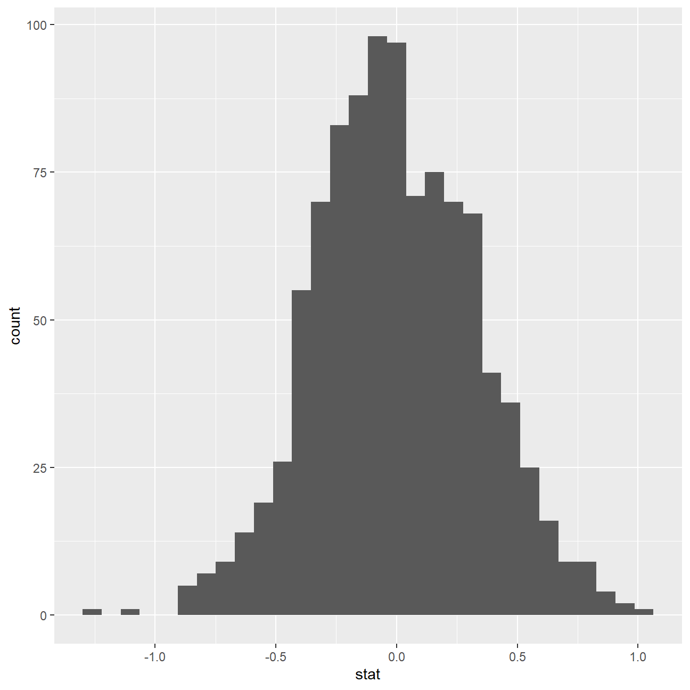
Now that the test is initialized and the null distribution formed, we can visualise to see how many of these null permutations have a difference of at least obs_stat of 1.77?
We can also calculate the p-value for your hypothesis test using the function infer::get_p_value().
null_dist %>% visualize() +
shade_p_value(obs_stat = obs_diff, direction = "two-sided")
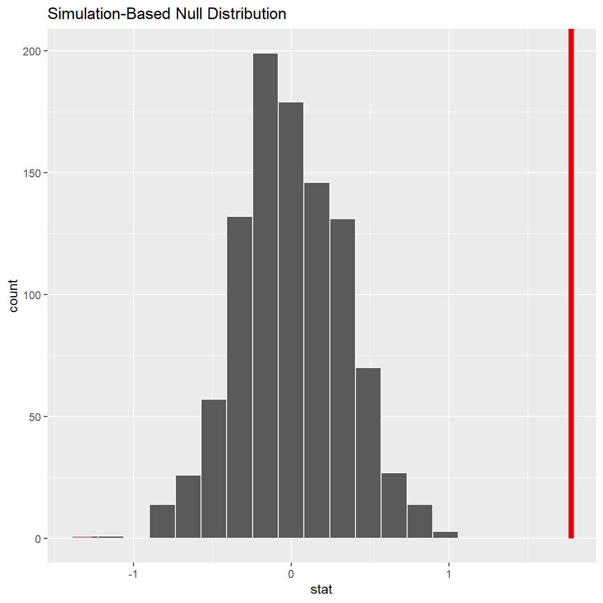
null_dist %>%
get_p_value(obs_stat = obs_diff, direction = "two_sided")
## # A tibble: 1 x 1
## p_value
## <dbl>
## 1 0
This the standard workflow for performing hypothesis tests.
Q2 IMDB ratings: Differences between directors
In the following I will explore whether the mean IMDB rating for Steven Spielberg and Tim Burton are the same or not.

First, I reproduce the above graph.
movies <- read_csv(here::here("data", "movies.csv"))
glimpse(movies)
## Rows: 2,961
## Columns: 11
## $ title <chr> "Avatar", "Titanic", "Jurassic World", "The Ave...
## $ genre <chr> "Action", "Drama", "Action", "Action", "Action"...
## $ director <chr> "James Cameron", "James Cameron", "Colin Trevor...
## $ year <dbl> 2009, 1997, 2015, 2012, 2008, 1999, 1977, 2015,...
## $ duration <dbl> 178, 194, 124, 173, 152, 136, 125, 141, 164, 93...
## $ gross <dbl> 7.61e+08, 6.59e+08, 6.52e+08, 6.23e+08, 5.33e+0...
## $ budget <dbl> 2.37e+08, 2.00e+08, 1.50e+08, 2.20e+08, 1.85e+0...
## $ cast_facebook_likes <dbl> 4834, 45223, 8458, 87697, 57802, 37723, 13485, ...
## $ votes <dbl> 886204, 793059, 418214, 995415, 1676169, 534658...
## $ reviews <dbl> 3777, 2843, 1934, 2425, 5312, 3917, 1752, 1752,...
## $ rating <dbl> 7.9, 7.7, 7.0, 8.1, 9.0, 6.5, 8.7, 7.5, 8.5, 7....
selected_directors <- movies %>%
select(director, rating) %>%
filter(director == "Steven Spielberg" | director == "Tim Burton") %>%
group_by(director) %>%
summarize(avg = mean(rating),
sd = sd(rating),
count = n(),
tstat = qt(0.975, count-1),
se = sd/sqrt(count),
lower_ci = avg - tstat*se,
upper_ci = avg + tstat*se)
selected_directors %>%
kable() %>%
kable_classic()
|
director
|
avg
|
sd
|
count
|
tstat
|
se
|
lower_ci
|
upper_ci
|
|
Steven Spielberg
|
7.57
|
0.695
|
23
|
2.07
|
0.145
|
7.27
|
7.87
|
|
Tim Burton
|
6.93
|
0.749
|
16
|
2.13
|
0.187
|
6.53
|
7.33
|
# Selecting Spielberg and Burton
selected_directors <- movies %>%
filter(director == "Steven Spielberg" | director == "Tim Burton") %>%
group_by(director) %>%
summarise(
mean = mean(rating),
sd = sd(rating),
count = n(),
se = sd / sqrt(count),
tstat = qt(0.975, count - 1),
lower_ci = mean - tstat * se,
upper_ci = mean + tstat * se)
# Reproducing the plot
ggplot(selected_directors, aes(
x = mean,
y = reorder(director, mean))) +
# Adding area where confidence intervals overlap
geom_rect(xmin = 7.27,
xmax = 7.33,
ymin = 0,
ymax = 10,
fill = "grey",
aes(alpha = 0.5)) +
# Adding points to plot the mean
geom_point(aes(
color = director),
size = 4) +
# Adding confidence interval error bars
geom_errorbar(aes(
xmin = lower_ci,
xmax = upper_ci,
colour = director,
fill = director),
width = 0.2,
size = 1.5) +
# Adding mean labels
geom_text(aes(
label = round(mean, 2)),
size = 5,
hjust = 0.4,
vjust = -1) +
# Setting fill colors
scale_fill_manual(values = c("#FA8072", "#48D1CC")) +
# Adding confidence interval labels
geom_text(aes(
label = round(lower_ci, 1.4)),
hjust = 4,
vjust = - 1) +
geom_text(aes(
label = round(upper_ci, 1.4)),
hjust = - 4,
vjust = - 1) +
# Adding theme
theme_bw() +
# Removing legend
theme(legend.position = "none") +
# Adding titles to plot and axes
theme(plot.title = element_text(face = "bold")) +
labs(title = "Do Spielberg and Burton have the same IMDB ratings?",
subtitle = "95% confidence intervals overlap",
x = "Mean IMDB ratings",
y = "") +
# Adjusting size
theme(aspect.ratio=3.5/5)
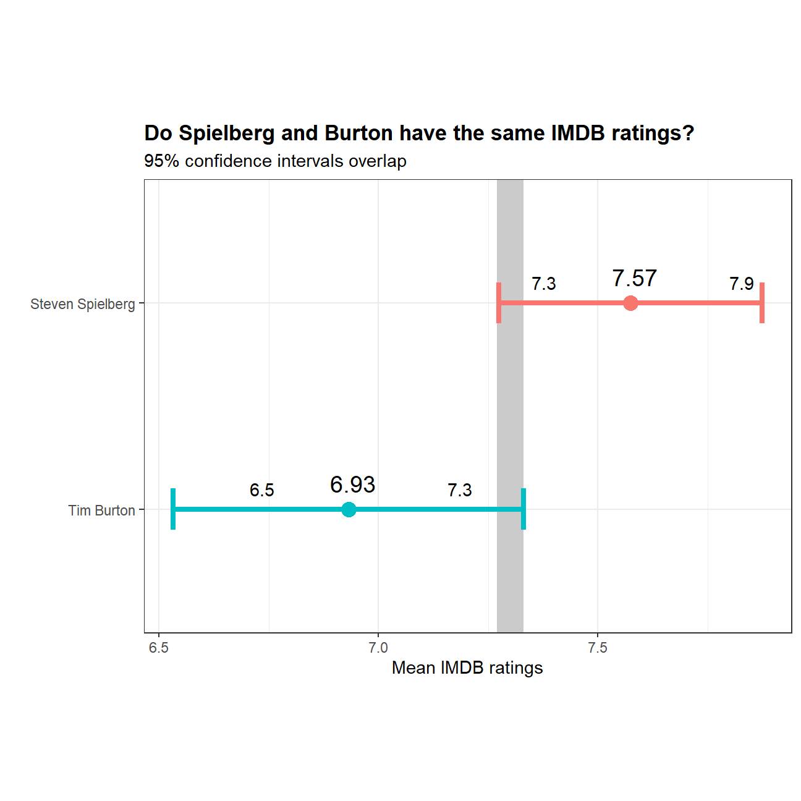
Now I will perform a hypothesis test with the hypotheses being:
Null hypothesis: There is no difference between the mean ratings for Spielberg and Burton
Alternative hypothesis: There is a difference between the mean ratings for Spielberg and Burton
selected_directors <- movies %>%
select(director, rating) %>%
filter(director == "Steven Spielberg" | director == "Tim Burton")
t.test(rating ~ director, selected_directors)
##
## Welch Two Sample t-test
##
## data: rating by director
## t = 3, df = 31, p-value = 0.01
## alternative hypothesis: true difference in means is not equal to 0
## 95 percent confidence interval:
## 0.16 1.13
## sample estimates:
## mean in group Steven Spielberg mean in group Tim Burton
## 7.57 6.93
The above t test shows that we have to reject the null hypothesis as the p-value is equal to 0.01 and hence < 0.05
set.seed(1234)
# Running a simulation with the infer package
hypothesis_test <- selected_directors %>%
specify(rating ~ director) %>%
# Null hypothesis is that there is no difference between the two population means
hypothesise(null="independence") %>%
generate(reps=1000,
type="permute") %>%
# Obtaining difference in means with bootstrap function
calculate(stat="diff in means",
order = c("Steven Spielberg","Tim Burton"))
difference_ratings <- selected_directors %>%
specify(rating ~ director) %>%
calculate(stat = "diff in means", order = c("Steven Spielberg","Tim Burton"))
# Get p_Value through infer package
p_value <- hypothesis_test %>%
get_p_value(obs_stat = difference_ratings,
direction = "both")
kbl(p_value,
col.names=c("p-value"),
caption="Null distribution") %>%
kable_classic()
Table 2: Null distribution
|
p-value
|
|
0.008
|
The simulation-based test shows again that the p-value is < the alpha value. Hence, we reject the null-hypothesis.
Omega Group plc- Pay Discrimination
Background
At the last board meeting of Omega Group Plc., the headquarters of a large multinational company, the issue was raised that women were being discriminated in the company, in the sense that the salaries were not the same for male and female executives. A quick analysis of a sample of 50 employees (of which 24 men and 26 women) revealed that the average salary for men was about 8,700 higher than for women. This seemed like a considerable difference, so it was decided that a further analysis of the company salaries was warranted.
The objective is to find out whether there is indeed a significant difference between the salaries of men and women, and whether the difference is due to discrimination or whether it is based on another, possibly valid, determining factor.
Loading the data
omega <- read_csv(here::here("data", "omega.csv"))
# examine the data frame
glimpse(omega)
## Rows: 50
## Columns: 3
## $ salary <dbl> 81894, 69517, 68589, 74881, 65598, 76840, 78800, 70033, ...
## $ gender <chr> "male", "male", "male", "male", "male", "male", "male", ...
## $ experience <dbl> 16, 25, 15, 33, 16, 19, 32, 34, 1, 44, 7, 14, 33, 19, 24...
As shown above, the data set has 50 observations and 3 variables, i.e. salary, gender and work experience.
Relationship Salary - Gender
The data frame omega contains the salaries for the sample of 50 executives in the company. Let’s find out if we conclude that there is a significant difference between the salaries of the male and female executives.
# Summary Statistics of salary by gender
mosaic::favstats (salary ~ gender, data=omega)
## gender min Q1 median Q3 max mean sd n missing
## 1 female 47033 60338 64618 70033 78800 64543 7567 26 0
## 2 male 54768 68331 74675 78568 84576 73239 7463 24 0
# Dataframe with two rows (male-female) and having as columns gender, mean, SD, sample size, the t-critical value, the standard error, the margin of error, and the low/high endpoints of a 95% condifence interval
omega %>%
group_by(gender) %>%
summarise(mean = mean(salary),
SD = sd(salary),
sample_size = n(),
t_critical = qt(0.975, sample_size -1),
SE = SD/sqrt(sample_size),
margin_of_error = SE*t_critical,
lower_ci = mean - margin_of_error,
upper_ci = mean + margin_of_error)
## # A tibble: 2 x 9
## gender mean SD sample_size t_critical SE margin_of_error lower_ci
## <chr> <dbl> <dbl> <int> <dbl> <dbl> <dbl> <dbl>
## 1 female 64543. 7567. 26 2.06 1484. 3056. 61486.
## 2 male 73239. 7463. 24 2.07 1523. 3151. 70088.
## # ... with 1 more variable: upper_ci <dbl>
From the above table, we find that for almost all the statistics (including min, Q1, median, Q3, max, mean), males have higher salary than females.
Besides, the mean salary of females is in the range [61486, 67599] and the mean salary of males is in the range [70088, 76390]. There is no overlap between these two confidence intervals.This would allow us to reject the null hypothesis, but we will carry out hypothesis testing anyway and analyse the relationships between all the remaining factors.
Then, we use t.test() and the simulation method from the infer package to run a hypothesis testing, assuming as a null hypothesis that the mean difference in salaries is zero, or that, on average, men and women make the same amount of money.
# hypothesis testing using t.test()
t.test(salary~gender, data = omega)
##
## Welch Two Sample t-test
##
## data: salary by gender
## t = -4, df = 48, p-value = 2e-04
## alternative hypothesis: true difference in means is not equal to 0
## 95 percent confidence interval:
## -12973 -4420
## sample estimates:
## mean in group female mean in group male
## 64543 73239
# hypothesis testing using infer package
male_mean <- omega %>%
filter(gender == "male") %>%
summarize(male_mean = mean(salary))
female_mean <- omega %>%
filter(gender == "female") %>%
summarize(female_mean = mean(salary))
obs_diff <- female_mean - male_mean
stimulated <- omega %>%
specify(salary~gender) %>%
hypothesize(null = "independence") %>%
generate(reps = 1000,
type = "permute") %>%
calculate(stat = "diff in means",
order = c("female", "male"))
stimulated %>%
get_pvalue(obs_stat = obs_diff[1,1],
direction = "both")
## # A tibble: 1 x 1
## p_value
## <dbl>
## 1 0
In both t.test and bootstrap hypothesis test, the p-value generated is less than the alpha value of 0.05. Therefore, we reject the null hypothesis and conclude that there is a statistically significant difference in salary between male and female employees in Omega Group.
Relationship Experience - Gender
At the board meeting, someone raised the issue that there was indeed a substantial difference between male and female salaries, but that this was attributable to other reasons such as differences in experience.
A questionnaire send out to the 50 executives in the sample reveals that the average experience of the men is approximately 21 years, whereas the women only have about 7 years experience on average (see table below).
# Summary Statistics of salary by gender
favstats (experience ~ gender, data=omega)
## gender min Q1 median Q3 max mean sd n missing
## 1 female 0 0.25 3.0 14.0 29 7.38 8.51 26 0
## 2 male 1 15.75 19.5 31.2 44 21.12 10.92 24 0
Based on this evidence, we also use the above two methods to run hypothesis testing. Our null hypothesis is that there is no significant difference between the experience of the male and female executives.
# hypothesis testing using t.test()
t.test(experience~gender, data = omega)
##
## Welch Two Sample t-test
##
## data: experience by gender
## t = -5, df = 43, p-value = 1e-05
## alternative hypothesis: true difference in means is not equal to 0
## 95 percent confidence interval:
## -19.35 -8.13
## sample estimates:
## mean in group female mean in group male
## 7.38 21.12
# hypothesis testing using infer package
male_exp <- omega %>%
filter(gender == "male") %>%
summarize(male_mean = mean(experience))
female_exp <- omega %>%
filter(gender == "female") %>%
summarize(female_mean = mean(experience))
obs_diff <- female_exp - male_exp
stimulated <- omega %>%
specify(experience~gender) %>%
hypothesize(null = "independence") %>%
generate(reps = 1000,
type = "permute") %>%
calculate(stat = "diff in means",
order = c("female", "male"))
stimulated %>%
get_pvalue(obs_stat = obs_diff[1,1],
direction = "both")
## # A tibble: 1 x 1
## p_value
## <dbl>
## 1 0
In both t.test and bootstrap hypothesis test, the p-value generated is less than the alpha value of 0.05. Therefore, we reject the null hypothesis and conclude that there is a statistically significant difference in experience between male and female employees in Omega Group.
Relationship Salary - Experience
Someone at the meeting argues that clearly, a more thorough analysis of the relationship between salary and experience is required before any conclusion can be drawn about whether there is any gender-based salary discrimination in the company.
So we analyse the relationship between salary and experience and draw a scatterplot to visually inspect the data.
ggplot(omega,
aes(x = experience, y = salary)) +
geom_point(aes(colour = gender)) +
geom_smooth() +
labs(title = "Does experience affect salary?",
x = "Years of experience",
y = "Salary ($)") +
theme_base()

From the scatterplot shown above, there seems to be a positive relationship between years of experience and salary, although the difference in salary appears to decrease at higher levels of experience.
Check correlations between the data
We use GGally:ggpairs() to create a scatterplot and correlation matrix. Essentially, we change the order our variables will appear in and have the dependent variable (Y), salary, as last in our list. We then pipe the dataframe to ggpairs() with aes arguments to colour by gender and make ths plots somewhat transparent (alpha = 0.3).
omega %>%
#order variables they will appear in ggpairs()
select(gender, experience, salary) %>%
ggpairs(aes(colour=gender, alpha = 0.3)) +
theme_bw()

The salary vs experience scatterplot shows that the majority of women in the sample have a comparable salary to men with the same experience level.
The majority of women in the sample have experience between 0 and 20 years, whereas the approximate range of experience for most men is between 10 and 35 years. In the previous analysis, we concluded that there is a statistically significant difference between the levels of experience for both genders. This chart further confirms what we were seeing before. Women seem to end their careers earlier, at least within the given sample.
Challenge 1: Reproducing Yield Curve
##Parable

###FRED
# Get a list of FRED codes for US rates and US yield curve; choose monthly frequency
# to see, eg., the 3-month T-bill https://fred.stlouisfed.org/series/TB3MS
tickers <- c('TB3MS', # 3-month Treasury bill (or T-bill)
'TB6MS', # 6-month
'GS1', # 1-year
'GS2', # 2-year, etc....
'GS3',
'GS5',
'GS7',
'GS10',
'GS20',
'GS30') #.... all the way to the 30-year rate
# Turn FRED codes to human readable variables
myvars <- c('3-Month Treasury Bill',
'6-Month Treasury Bill',
'1-Year Treasury Rate',
'2-Year Treasury Rate',
'3-Year Treasury Rate',
'5-Year Treasury Rate',
'7-Year Treasury Rate',
'10-Year Treasury Rate',
'20-Year Treasury Rate',
'30-Year Treasury Rate')
maturity <- c('3m', '6m', '1y', '2y','3y','5y','7y','10y','20y','30y')
# by default R will sort these maturities alphabetically; but since we want
# to keep them in that exact order, we recast maturity as a factor
# or categorical variable, with the levels defined as we want
maturity <- factor(maturity, levels = maturity)
# Create a lookup dataset
mylookup<-data.frame(symbol=tickers,var=myvars, maturity=maturity)
# Take a look:
mylookup %>%
knitr::kable()
|
symbol
|
var
|
maturity
|
|
TB3MS
|
3-Month Treasury Bill
|
3m
|
|
TB6MS
|
6-Month Treasury Bill
|
6m
|
|
GS1
|
1-Year Treasury Rate
|
1y
|
|
GS2
|
2-Year Treasury Rate
|
2y
|
|
GS3
|
3-Year Treasury Rate
|
3y
|
|
GS5
|
5-Year Treasury Rate
|
5y
|
|
GS7
|
7-Year Treasury Rate
|
7y
|
|
GS10
|
10-Year Treasury Rate
|
10y
|
|
GS20
|
20-Year Treasury Rate
|
20y
|
|
GS30
|
30-Year Treasury Rate
|
30y
|
df <- tickers %>% tidyquant::tq_get(get="economic.data",
from="1960-01-01") # start from January 1960
glimpse(df)
## Rows: 6,774
## Columns: 3
## $ symbol <chr> "TB3MS", "TB3MS", "TB3MS", "TB3MS", "TB3MS", "TB3MS", "TB3MS...
## $ date <date> 1960-01-01, 1960-02-01, 1960-03-01, 1960-04-01, 1960-05-01,...
## $ price <dbl> 4.35, 3.96, 3.31, 3.23, 3.29, 2.46, 2.30, 2.30, 2.48, 2.30, ...
###Joining data
yield_curve <-left_join(df,mylookup,by="symbol")
Plotting the yield curve
Yields on US rates by duration since 1960
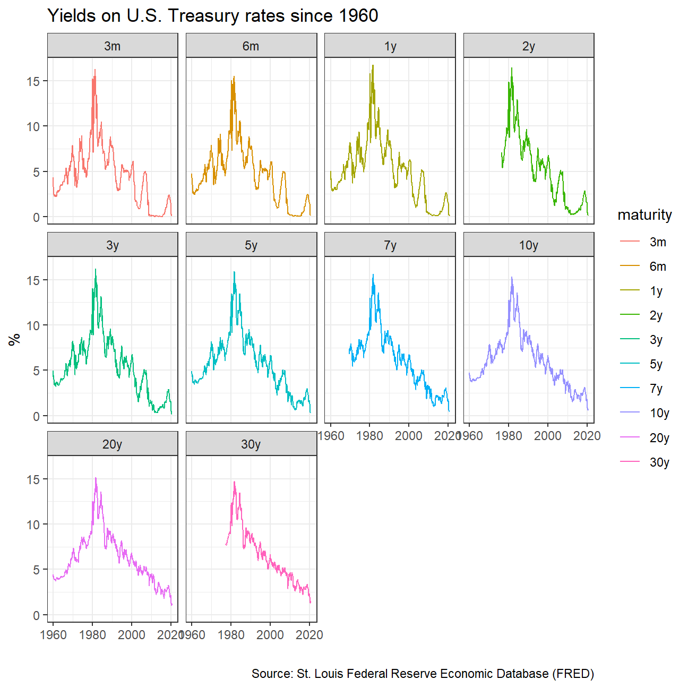
Monthly yields on US rates by duration since 1999 on a year-by-year basis
yieldyear <- yield_curve %>%
clean_names() %>%
mutate (year = year(date),
month = lubridate::month(date, label = TRUE),
week = isoweek(date)) %>% filter(year > 1998)
yieldyear$year = as.factor(yieldyear$year)
r <- ggplot(yieldyear, aes(x=maturity, y=price, group = date, color = year)) + geom_line() + facet_wrap(~year) + labs(title = "US Yield Curve", caption = "Source: St. Louis Federal Reserve Economic Database (FRED)", x = "Maturity", y = "Yield (%)") + theme_bw() + theme(legend.position = "none")
r
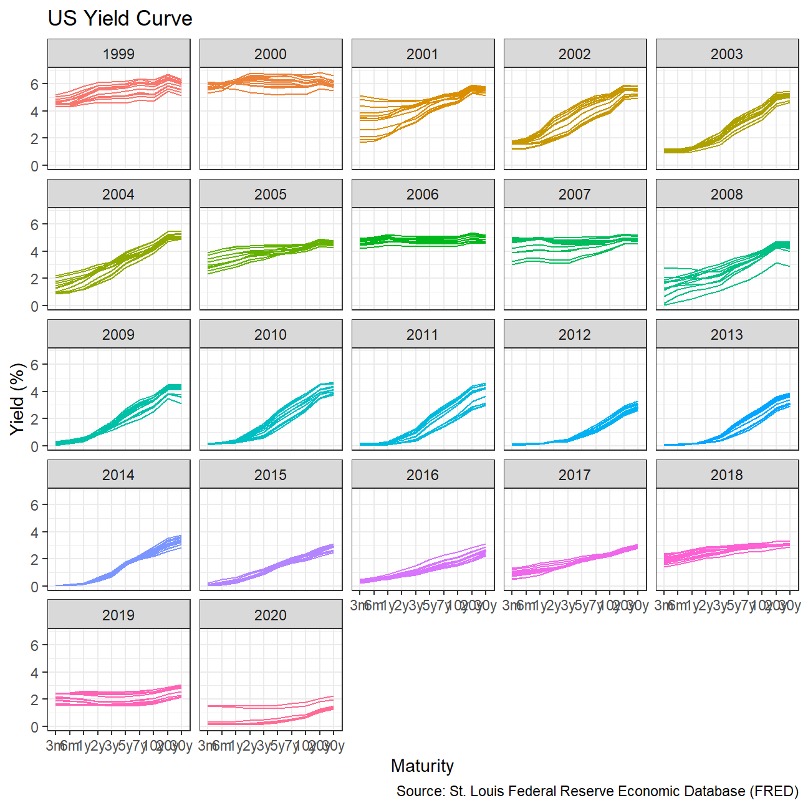
3-month and 10-year yields since 1999
part3 = yield_curve %>% filter(maturity == "3m" | maturity =="10y")
s <- ggplot(part3, aes(x=date, y=price, color = maturity), group = maturity)+geom_line()+ theme_bw() + labs(title = "Yields on 3-month and 10-year US Treasury rates since 1999", caption = "Source: St. Louis Federal Reserve Economic Database (FRED)", x = "", y = "%") + scale_y_continuous( limits=c(0,7)) + scale_x_date(limits = as.Date(c('1999-01-01','2020-01-01')))
s
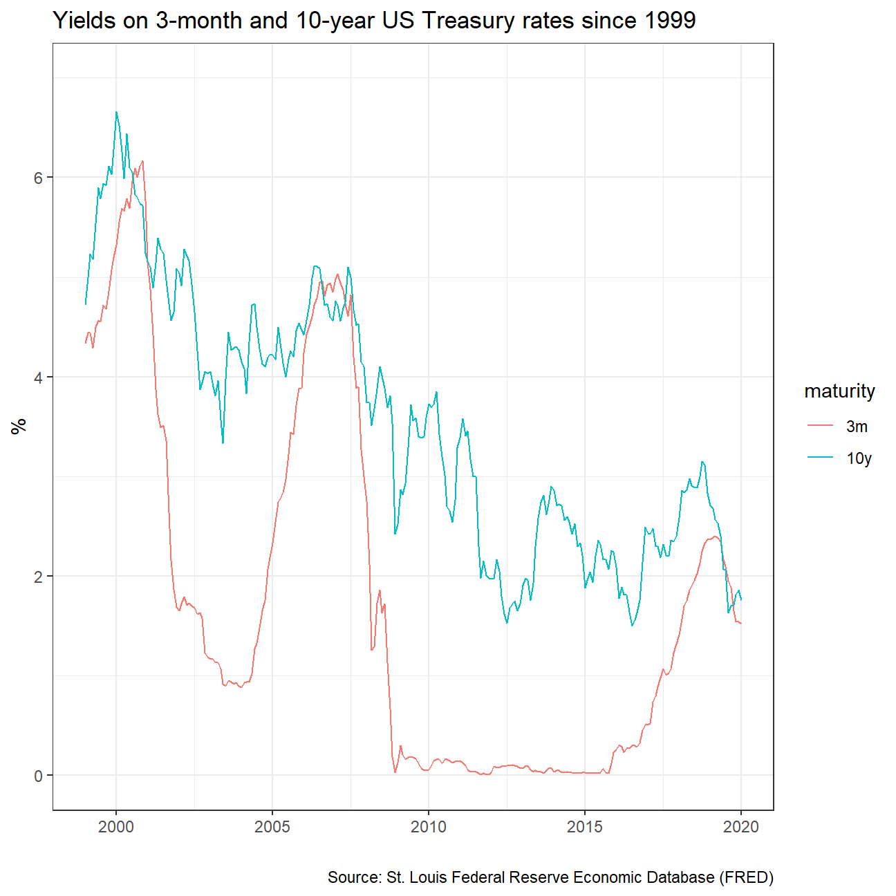
According to Wikipedia’s list of recession in the United States, since 1999 there have been two recession in the US: between Mar 2001–Nov 2001 and between Dec 2007–June 2009. Does the yield curve seem to flatten before these recessions? Can a yield curve flattening really mean a recession is coming in the US? Since 1999, when did short-term (3 months) yield more than longer term (10 years) debt?
Since 1999, Short term yields increased passed the ten year in 2001, 2008, and 2020. This along with graph #2 suggest that yield curve seemed to flatter (and even invert) in periods before recessions. it seems, A yield curve flattening has strong correlation with recessions. So a recession may be coming to the US.
Getting Recession Data
# get US recession dates after 1946 from Wikipedia
# https://en.wikipedia.org/wiki/List_of_recessions_in_the_United_States
recessions <- tibble(
from = c("1948-11-01", "1953-07-01", "1957-08-01", "1960-04-01", "1969-12-01", "1973-11-01", "1980-01-01","1981-07-01", "1990-07-01", "2001-03-01", "2007-12-01"),
to = c("1949-10-01", "1954-05-01", "1958-04-01", "1961-02-01", "1970-11-01", "1975-03-01", "1980-07-01", "1982-11-01", "1991-03-01", "2001-11-01", "2009-06-01")
) %>%
mutate(From = ymd(from),
To=ymd(to),
duration_days = To-From)
recessions
## # A tibble: 11 x 5
## from to From To duration_days
## <chr> <chr> <date> <date> <drtn>
## 1 1948-11-01 1949-10-01 1948-11-01 1949-10-01 334 days
## 2 1953-07-01 1954-05-01 1953-07-01 1954-05-01 304 days
## 3 1957-08-01 1958-04-01 1957-08-01 1958-04-01 243 days
## 4 1960-04-01 1961-02-01 1960-04-01 1961-02-01 306 days
## 5 1969-12-01 1970-11-01 1969-12-01 1970-11-01 335 days
## 6 1973-11-01 1975-03-01 1973-11-01 1975-03-01 485 days
## 7 1980-01-01 1980-07-01 1980-01-01 1980-07-01 182 days
## 8 1981-07-01 1982-11-01 1981-07-01 1982-11-01 488 days
## 9 1990-07-01 1991-03-01 1990-07-01 1991-03-01 243 days
## 10 2001-03-01 2001-11-01 2001-03-01 2001-11-01 245 days
## 11 2007-12-01 2009-06-01 2007-12-01 2009-06-01 548 days
Spread Graph Replication
#Setting Up Spread Columns
yieldspread3 = yield_curve %>% filter( maturity == "3m")
yieldspread10 = yield_curve %>% filter(maturity == "10y")
yielddiff = left_join(yieldspread3, yieldspread10, by = "date")
yieldspread = yielddiff %>% select(date, price.x, price.y)
yieldspread$spread = yielddiff$price.y - yielddiff$price.x
yieldspread$date = as.Date(yieldspread$date)
# mutating for ribbons
yieldspread = yieldspread %>% mutate(z=ifelse(spread>0,spread,0))
#Graphing
h <- ggplot(yieldspread, aes(x=date, y=spread)) + geom_line() + labs(title = "US Yield Curve", caption = "Source: St. Louis Federal Reserve Economic Database (FRED)", x = "", y = "Difference(10year - 3month) yield in %") + theme_bw() + geom_hline(aes(yintercept = 0))
#adding Blue and Red Ribbons
h= h+geom_ribbon(aes(ymin=0,ymax=spread, group = 1), fill="#9fb8ef", color="black") + geom_ribbon(aes(ymin=spread, ymax=z), fill="#eda1a1", color="black")
h
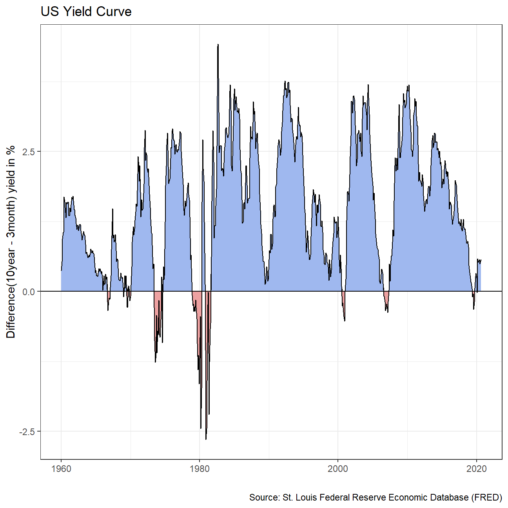
#adding grey boxes for recession dates
h = h + geom_rect(data=recessions, aes(NULL,NULL, xmin = From, xmax = To),
ymin=-10,ymax=10, colour="grey", size=0.5, alpha=0.2) + scale_x_date(limits = as.Date(c('1960-01-01','2021-01-01')))
#adding geom_rug
h+geom_rug(aes(color = spread>0), position = "jitter",sides = 'b',size = 0.0001) + scale_color_manual(values = c("#eda1a1", "#9fb8ef"))
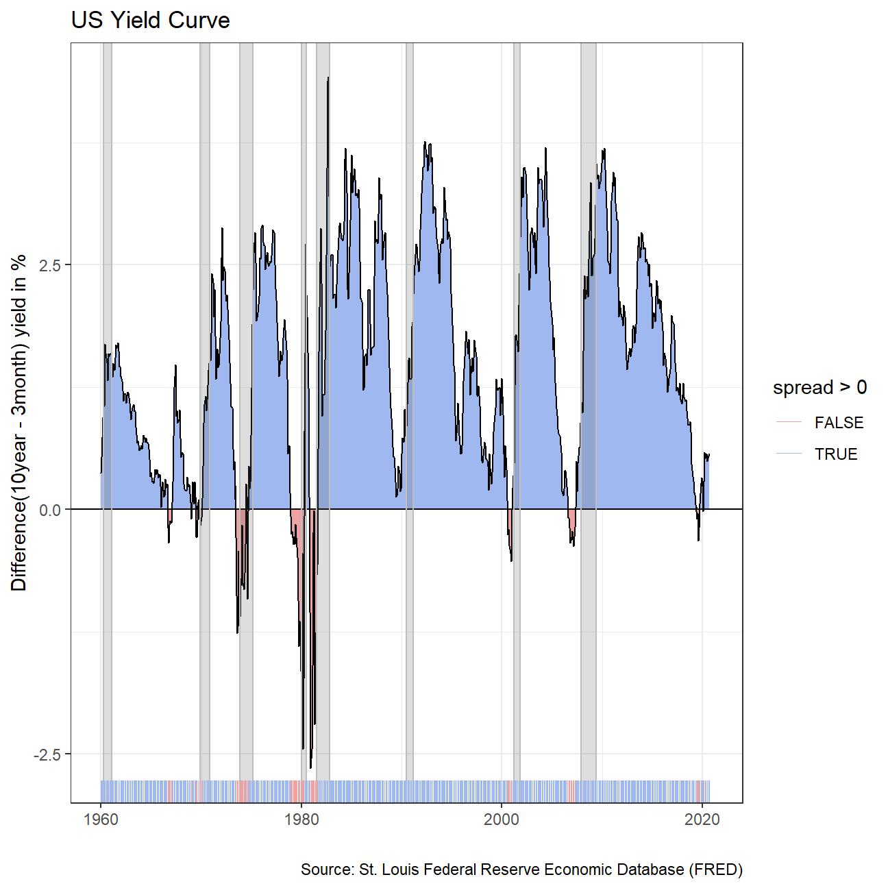
Challenge 2:GDP components over time and among countries
At the risk of oversimplifying things, the main components of gross domestic product, GDP are personal consumption (C), business investment (I), government spending (G) and net exports (exports - imports). You can read more about GDP and the different approaches in calculating at the Wikipedia GDP page.
The GDP data we will look at is from the United Nations’ National Accounts Main Aggregates Database, which contains estimates of total GDP and its components for all countries from 1970 to today. We will look at how GDP and its components have changed over time, and compare different countries and how much each component contributes to that country’s GDP. The file we will work with is GDP and its breakdown at constant 2010 prices in US Dollars and it has already been saved in the Data directory. Have a look at the Excel file to see how it is structured and organised
UN_GDP <- read_excel(here::here("data", "Download-GDPconstant-USD-countries.xls"), # Excel filename
sheet="Download-GDPconstant-USD-countr", # Sheet name
skip=1) # Number of rows to skip
GDP_tidy<- UN_GDP %>%
pivot_longer(cols = 4:51, names_to = 'Year', values_to = 'Value') %>%
filter(IndicatorName %in% c('Gross capital formation',
'Exports of goods and services',
'Imports of goods and services',
'General government final consumption expenditure',
'Household consumption expenditure (including Non-profit institutions serving households)',
'Gross Domestic Product (GDP)')) %>%
mutate(Value = Value/1e9) %>%
# renaming our indicators
mutate(IndicatorName = case_when(IndicatorName == 'Gross capital formation' ~ 'Gross capital formation',
IndicatorName == 'Gross Domestic Product (GDP)' ~ 'GDP',
IndicatorName == 'Imports of goods and services' ~ 'Imports',
IndicatorName == 'Exports of goods and services' ~ 'Exports',
IndicatorName == 'General government final consumption expenditure' ~ 'Government expenditure',
IndicatorName == 'Household consumption expenditure (including Non-profit institutions serving households)' ~ 'Household expenditure'))
glimpse(GDP_tidy)
## Rows: 63,072
## Columns: 5
## $ CountryID <dbl> 4, 4, 4, 4, 4, 4, 4, 4, 4, 4, 4, 4, 4, 4, 4, 4, 4, 4,...
## $ Country <chr> "Afghanistan", "Afghanistan", "Afghanistan", "Afghani...
## $ IndicatorName <chr> "Household expenditure", "Household expenditure", "Ho...
## $ Year <chr> "1970", "1971", "1972", "1973", "1974", "1975", "1976...
## $ Value <dbl> 5.07, 4.84, 4.70, 5.21, 5.59, 5.65, 5.68, 6.15, 6.30,...
First, can you produce this plot?
 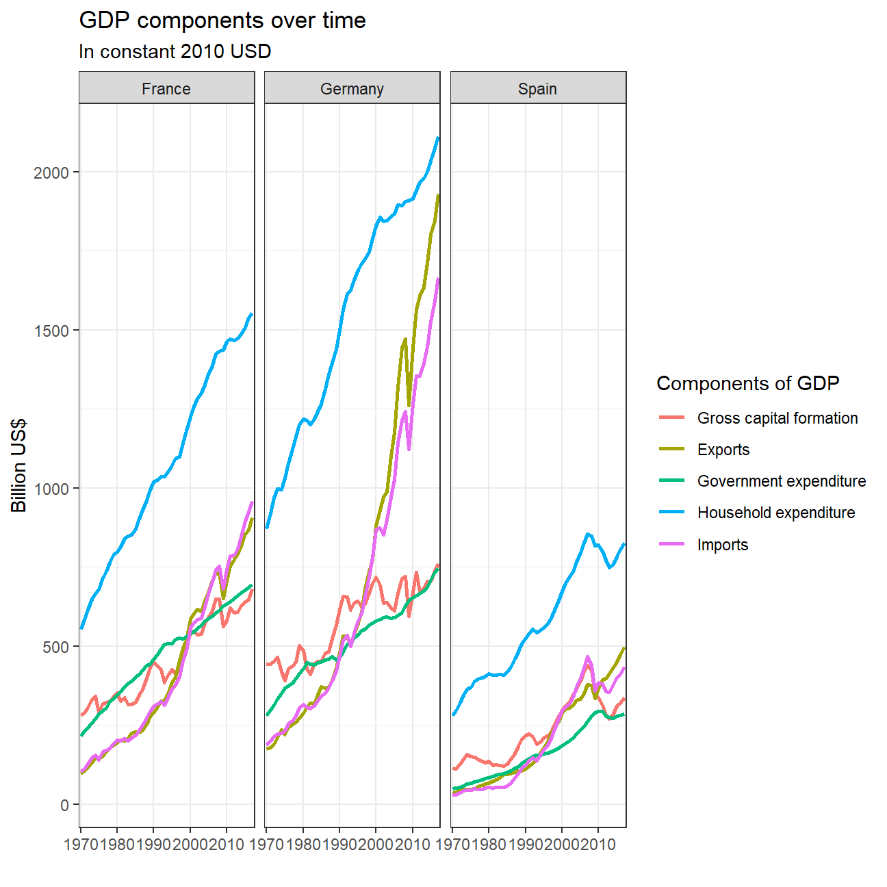
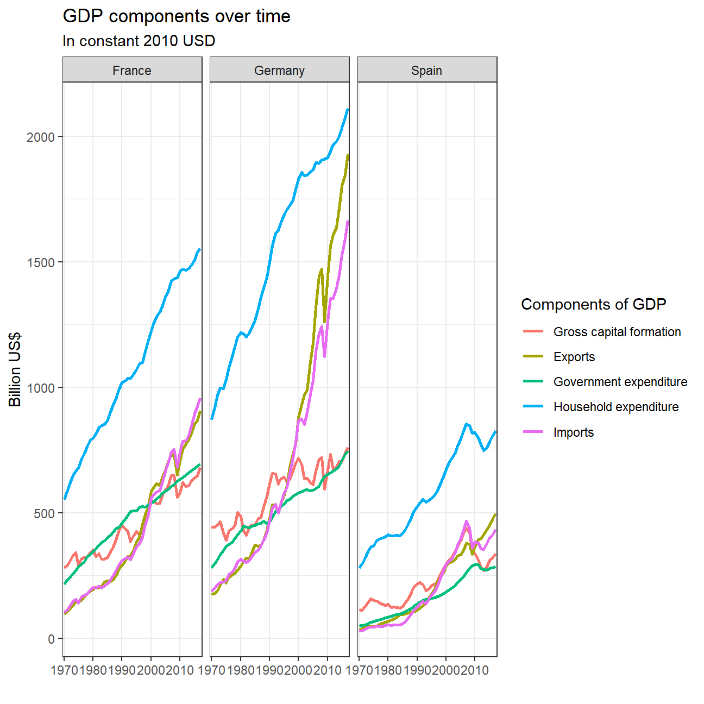
What is the % difference between what you calculated as GDP and the GDP figure included in the dataframe?
## Mean difference between calculated and given GDPs:
## 0.00398
Perhaps this mean difference arises from reporting standards and currency rates, resulting in different calculations for each country.
Secondly, recall that GDP is the sum of Household Expenditure (Consumption C), Gross Capital Formation (business investment I), Government Expenditure (G) and Net Exports (exports - imports). Even though there is an indicator Gross Domestic Product (GDP) in your dataframe, I would like you to calculate it given its components discussed above.
 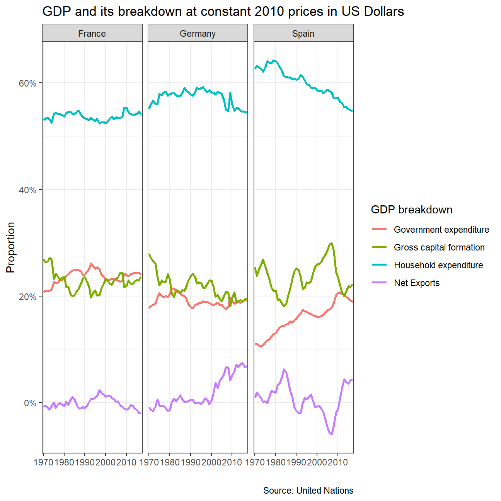
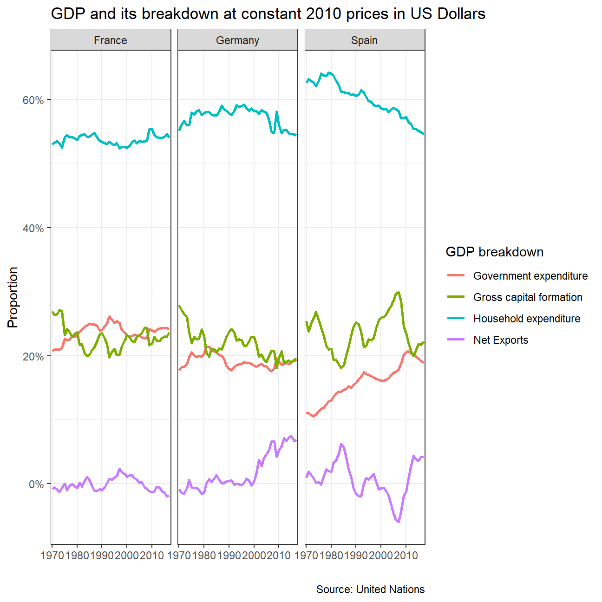
What is this last chart telling you? Can you explain in a couple of paragraphs the different dynamic among these three countries?
Germany is the only country in the list (and one of few globally) that exhibits a clear, consistent trade surplus, primarily due to strong exports of vehicles and other machinery. This surplus has been labelled as ‘toxic’ by many, who regard it as a liability rather than an asset - even Donald Trump!
From the graph it is also clear to see that India’s GDP has historically been dependent on household expenditure, but this reliance has been declining in recent years, at the expense of investment. Even before COVID-19 struck, India’s household consumer demand has been vulnerable and unpredictable because of skewed occupation demographics and its clear wealth gap - India’s richest 20% of households account for 36% of consumption expenditure. On the flipside, investment in the country has risen rapidly due to favourable infrastructural factors for investors, such as energy, communication and health, and government-led FDI incentives.